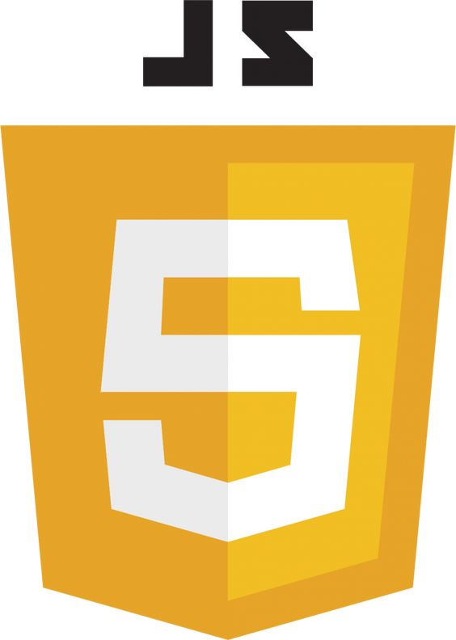
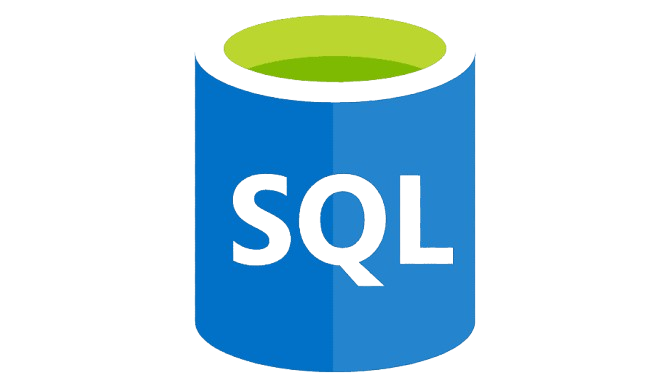
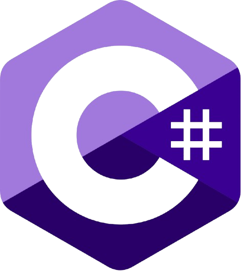
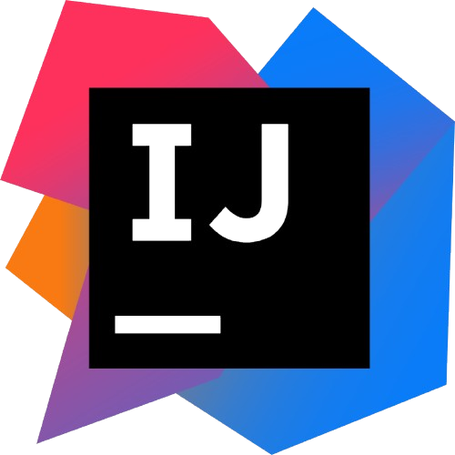

À propos de moi
Je m'appelle Enzo Pace, étudiant en BTS Systèmes Informatiques aux Organisations (SLAM). Passionné par le développement logiciel et les nouvelles technologies, je développe des compétences en programmation, gestion de projet IT, et travail d'équipe.
Télécharger mon CV
Compétences Techniques

Python

JavaScript

HTML

CSS

SQL

Java

VBA

VB6

C#
Outils Utilisés

Visual Studio Code

IntelliJ IDEA
WAMP

GitHub

Notion
Git
Expérience Professionnelle
Assistant chef de projet IT – RE/MAX France (08/2023 - 08/2024)
- Support informatique auprès des franchises
- Mise à disposition de flux XML
- Gestion des bugs et résolution de problèmes sur le CRM
Formation
- BTS Systèmes Informatiques aux Organisations (SLAM), ESIEE-IT (09/2023 - 07/2025)
- Baccalauréat Sciences et Technologies de l'Industrie (Mention Bien), Lycée Jean Perrin (2021 - 2023)
Contact
- Email : enzopace05@gmail.com
- Téléphone : 06 16 25 49 14
- LinkedIn : Enzo Pace